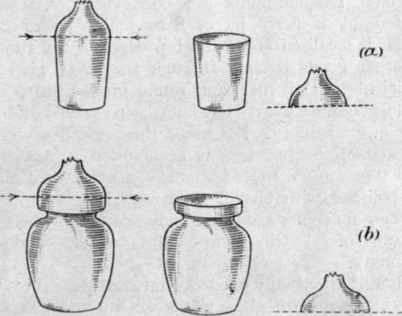
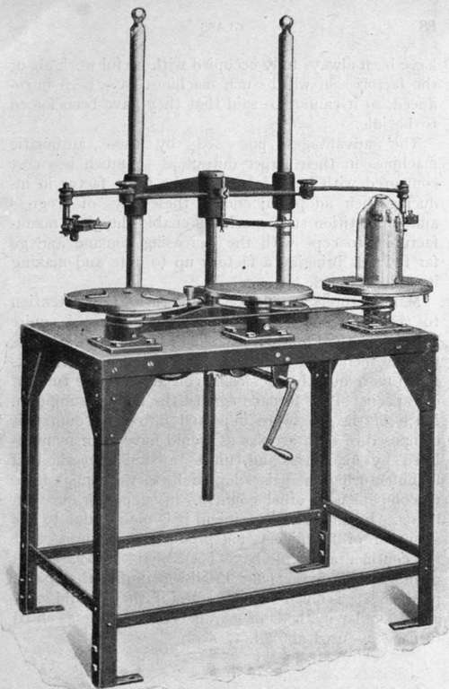

Making A Wine-Glass. Continued
Description
This section is from the book "Glass And Glass Manufacture", by Percival Marson. Also available from Amazon: Glass and Glass Manufacture.
Making A Wine-Glass. Continued
Many articles of glassware are formed with the aid of moulds. Take as an illustration the manufacture of tumblers and honey pots. A quantity of glass is gathered on the blow-iron, marvered, and blown out into an elongated bulb, which is introduced into a mould divided in two halves, which open or shut by hinges, a handle being fixed on either half to facilitate the operation. The interior of the mould is made to the shape of the article, and as the bulb of hot glass is introduced it is shut, and the workman blows down his blow-iron and extends the glass until it expands and fills the space within the mould, giving the complete form of the article with a surplus of metal just where the blow-iron is attached to the glass at the top. These tops are then cut off and finished, either by the workman re-heating the article by attaching the bottom to a pontil and shearing off the top edges, or the glass is annealed in its unfinished state and the top surplus portion cut off by an automatic machine specially constructed for cracking off such goods.
Such machines consist of a set of revolving tables upon which the glass articles are centred, and each in turn revolves in front of a thin, pointed, hot jet of gas flame, which impinges on the glass at the height at which the glass is to be cracked off. After one or two revolutions in front of this hot pencil of flame, it is removed, and, by applying a cold steel point so adjusted as to touch the part where the jet has heated the glass, a chill is imparted which causes the upper portion of the glass to crack away in a clear, sharp line round the glass. This top portion of surplus glass is thrown aside and returned to the furnace for re-melting as cullet.
Glassware Blown In Moulds Showing Portions Cracked Off
(a) Tumbler, (b) Honey Pot
The tumbler or honey pot is then conveyed to another machine which fire-polishes the edges to a smooth finish.
This machine consists of a circular revolving frame carrying small supports, which themselves rotate on their own centres. Upon each support an article is placed to be fire-polished and the frame carries them round, and they travel into another section of the machine, passing under a hooded chamber, which is heated by a fierce jet of flame. The jet of flame, which is localised on to the top edges of the tumblers or other goods passing through the hood, gives just sufficient heat to melt and round off the sharp edges of the glassware where they have been cracked off by the previous machines. By using these machines in this way labour is considerably economised, and as many as 300 or more articles an hour can be cracked off and fire-polished with unskilled labour.
These machines are extensively adopted in the manufacture of electric light bulbs, shades, and lamp chimneys.
Moulds are usually opened, shut, and dipped by boys, but in up-to-date glass works an automatic machine called a " Mechanical Boy " is used. With this machine, the mould is operated at the desire of the workman and not at the desire of the boy. The output is considerably expedited by the use of these automatic devices for opening and shutting the moulds.
It is obvious that whatever the shape of the mould, or whatever the design within the case, the glass takes the impression and retains it in after working. In this way, square sections, fluted indentations, or raised bosses can be formed with facility and regularity.
The Glass Workers' Union consider that the introduction of machinery deprives men of their independence and right to work, but as yet the glass blowers have been always fully occupied with useful work about the factories in which such machines have been introduced, so it cannot be said that they have been forced to be idle.
Vertical Cracking-Off Machine
By permission of Melii & Co.
The advantages possessed by these automatic machines in their larger output at so much less cost compared with hand labour is the great factor in inducing their adoption; and in these days of progress and competition such machines enable the glass manufacturers to cope with the increasing demand and go far towards bringing a factory up to date and making it well equipped.
Manufacturers should certainly turn their attention to these mechanical methods, as their use is quite general on the Continent and in America, and by their use the metal can be worked out of the pots or tanks much more quickly, increasing considerably the turnout or capacity of the furnace against the fuel consumption. Much of the glassware imported into this country is composed of such articles as would have been manipulated by machines, and, unless a similar method of manufacturing them is adopted here, we cannot hope to compete with other countries in supplying our own needs. In the writer's opinion, it is mainly due to the adoption of machinery for producing glassware that the continental people have been enabled to undersell us in our own market, and English manufacturers could produce at a much cheaper rate if they would only adopt similar methods of manufacture and the gas-fired furnaces as used abroad.
Continue to:
Tags
glass, manufacturing technology, furnace, glassware, wine glass